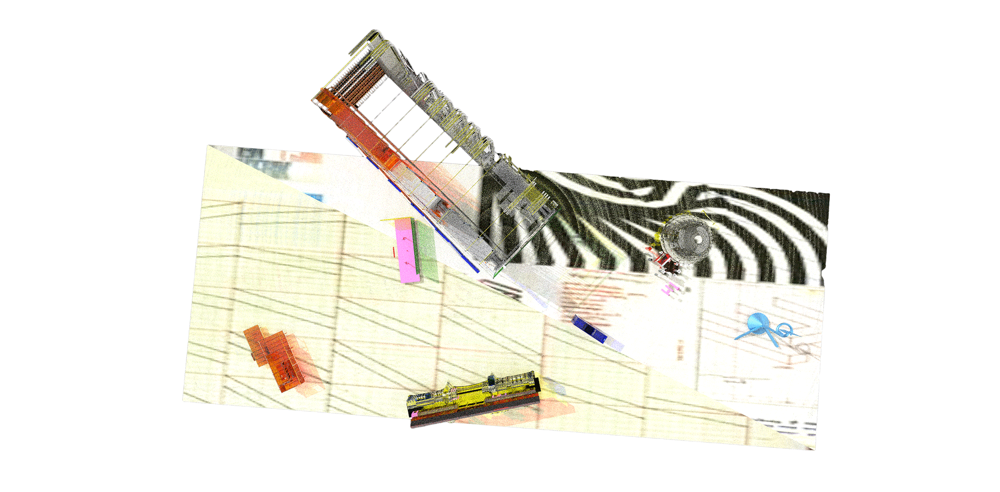

Arhetipovi su forme koje proizilaze iz podsvesti pojedinca. To su ukorenjene senzorne impresije slika koje reflektuju već proživljena iskustva.
Ove slike sadrže jak energetski naboj i javljaju se u svesti pojedinca kao reakcija na senzacije iz spoljašnje sredine. Manifestuju se
putem imaginarnih vizualnih sekvenci kroz snove, vizije ili halucinacije.